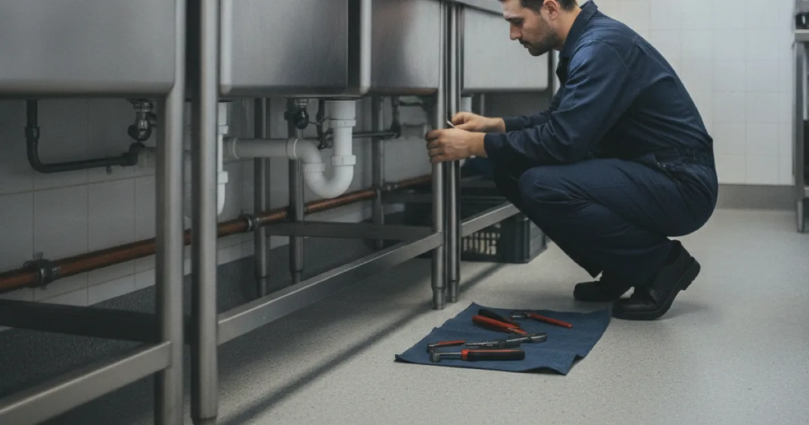

Commercial Plumbing in Westchester County, NY
We do light commercial plumbing — the small businesses, restaurants, and offices that need a reliable local plumber, not the large-scale industrial work that is a different trade. We will always tell you which you need.
- Licensed & Insured
- Upfront Pricing
- Residential & Light Commercial Plumbing
- Clean, Respectful Technicians

What light commercial means
Being clear about scope up front saves everyone time, so here is honestly what we do and do not do.
Our work: restaurants and cafes, small offices, retail units, salons, small multi-tenant buildings, and similar premises. Repairs, fixtures, water heaters, drain and sewer work, gas lines, grease traps, backflow testing, and the maintenance that keeps a small business running. The same plumbing skills as residential, applied to a commercial setting with its own fixtures, codes, and stakes.
Not our work: large-scale industrial plumbing, big new construction, high-rise systems, and process piping for manufacturing. Those need a commercial plumbing contractor geared for that scale, and we will tell you plainly rather than take on something outside what we do well.
The honest version: if you run a small business in Westchester and need a plumber who answers, shows up, and does the work properly, that is exactly us. If you are building a hospital wing, it is not.
Why downtime is the real cost
The difference between residential and commercial plumbing is often not the pipe — it is what a problem costs while it is unresolved. A blocked drain at home is an inconvenience. A blocked drain in a restaurant kitchen during service can close the business for the evening.
That changes how the work should be approached. It means diagnosing properly rather than repeatedly patching, so the problem is actually gone rather than back next week. It means scheduling disruptive work around trading hours where possible. And it means being straight about timescales, because a business needs to plan around them.
For a commercial kitchen, a lot of the recurring work is drainage and grease. Keeping on top of grease trap service for kitchens is far cheaper than the blocked line and closed kitchen that a neglected trap eventually produces.
The compliance side
Commercial premises carry obligations a home does not, and falling behind on them can mean penalties or a failed inspection at a bad moment.
- Backflow prevention and testing, generally required annually on commercial connections — annual backflow certification is something most commercial properties here have to keep current.
- Grease management, with trap sizing and cleaning records that some municipalities require food premises to maintain.
- Commercial fixture and accessibility codes, which differ from residential requirements.
- Permitted and inspected work for anything beyond a straightforward repair, handled properly so it stands up to inspection.
The OSHA guidance on workplace sanitation requirements sets out why much of this exists. We help small businesses stay on top of the plumbing side of it rather than discovering a lapse during an inspection.
How we approach commercial work
Commercial jobs are priced on the work, and for a business the real cost of a plumbing problem is often the downtime, not the pipe. A blocked drain in a restaurant kitchen during service can close the evening.
So we diagnose properly rather than repeatedly patching, schedule disruptive work around trading hours where we can, and are straight about timescales because a business needs to plan around them. For premises where a failure means lost trade, planned maintenance is usually cheaper than the emergencies it prevents.
Getting the right plumber for the job
Being clear about scope saves everyone time. If you run a small business in Westchester — a restaurant, office, retail unit, or small multi-tenant building — and need a plumber who answers and shows up, that is exactly us.
If you are building a hospital wing or need industrial process piping, it is not, and we will tell you plainly rather than take on something outside what we do well. Knowing that up front is worth more than a quote for the wrong scale of job.
Common questions
What size of business do you work with?
Small businesses — restaurants, offices, retail, salons, small multi-tenant buildings. Large industrial or big new-build work is a different scale and trade, and we will say so rather than overreach.
Can you work around our opening hours?
Where we can, yes — disruptive work is best scheduled around trading, and we plan for that. Some emergencies cannot wait, but planned work we will fit to your schedule as far as possible.
Do you handle our backflow testing?
Yes, including filing the report with the water authority, which is the part that actually meets the requirement. Most commercial properties here need this annually.
Our kitchen drain keeps backing up. Can you sort it for good?
Usually, yes — recurring kitchen backups are typically grease in the line, which means proper cleaning and a look at trap maintenance rather than repeated clearing. We aim to fix the cause, not just the symptom.
Do you offer maintenance agreements?
Talk to us about what your premises needs. For businesses where a plumbing failure means lost trade, planned maintenance is usually cheaper than the emergencies it prevents.
A local plumber for your business
Licensed, insured, and honest about what we do and do not take on.